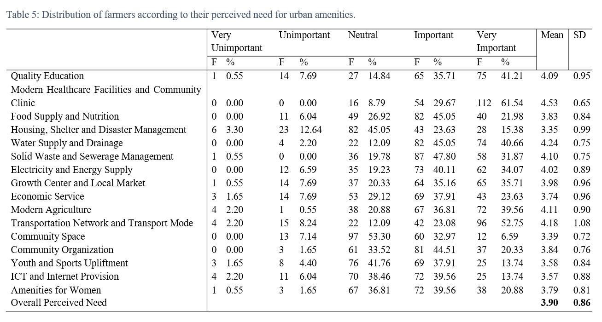
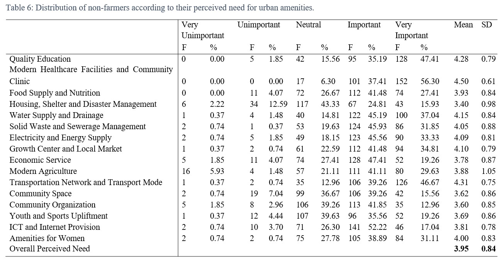
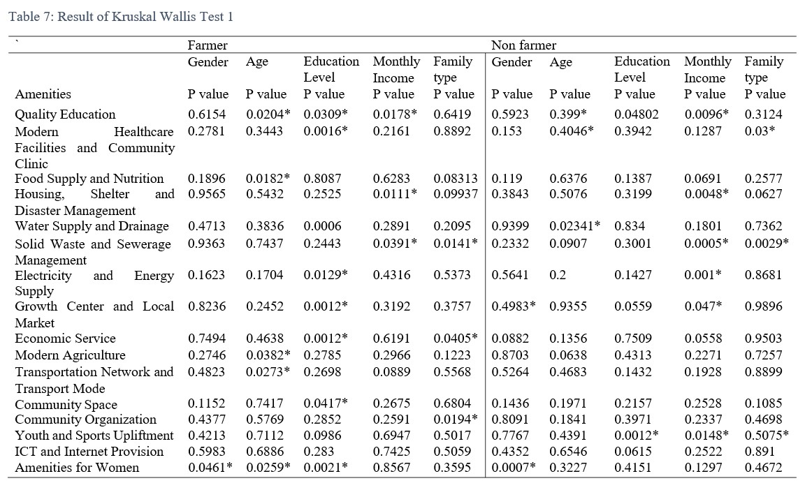
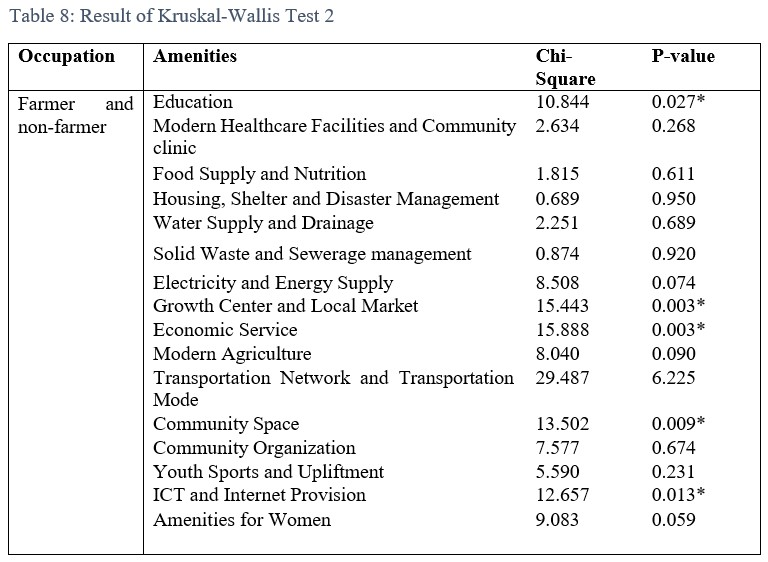
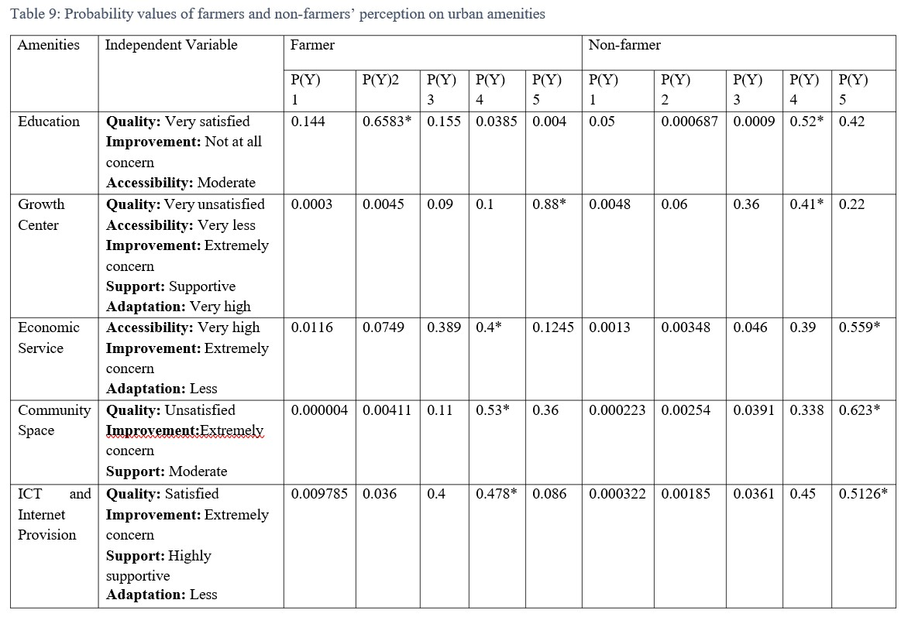

Before initiating any rural development program to fulfill rural people’s need and expectation, it is essential to comprehend farming and non-farming communities’ perception on urban amenities in rural areas. This study aimed to determine the socio-economic factors that influence farmers and non-farmers’ perceived need for urban amenities in rural Bangladesh. In addition, this study explores how farming and non-farming communities’ perception vary for different urban amenities in rural Bangladesh. Data were collected through a questionnaire from random sample of 452 respondents in rural areas of Dhaka, Mymensingh, Rajshahi and Chittagong divisions of Bangladesh. Descriptive statistics, inferential statistics and an ordered logistic-regression model were used to analyze the data. Farmers and non-farmers’ perception on urban amenities in rural areas have been studied based on quality and accessibility of urban amenities, their need for improvement, the extent to which urban amenities support people’s livelihood and their adaptation level. The results shows that socio-economic characteristics, which include gender, age, education level, monthly income, family type have significant influence on farmers and non-farmers’ perceived need for urban amenities in rural areas. Both farmers and non-farmers perceived that provision of urban amenities in rural areas is important. However, these two communities’ perception significantly varies for education, growth center and local market, economic service, community space, information and communication technology and internet provision. The results provide practical guidelines for improving urban amenities in rural Bangladesh to support farming and non-farming communities.


Farmers and non-farmers’ perceived need for urban amenities varies with socio-economic characteristics, for p-value <0.05, at 95% level of confidence.
Table 8 depicts that among all the amenities, education, growth center and local market, economic service, community space, ICT and internet provision have significant relationship with occupation for p-value <0.05 at 95% confidence interval. This result indicates that farming and non-farming communities’ perceived need significantly for these amenities.
For each significant urban amenity, the ordered logit model has identified significant independent variables. The model has given one significant scale for each independent variables. Based on the coefficient values of the significant scales for 0.059 independent variables, probability values have been calculated for each scale of dependent variable (5= “Very important”, 4= “Important”, 3= “Neutral”, 2= “Unimportant”,1= “Very unimportant”).
The highest probability value for farmers’ perception on education is P(Y) = 0.6583 for “Unimportant” and for non-farmers it is P(Y) = 0.52 for “Important”. This result implies that non- farmers give more importance on education than farmers. For perception on growth center and local market of farmers, the highest probability value for farmers is P(Y) = 0.88 for “Very Important” and for non-farmers it is P(Y) = 0.41 for “Important”. This result indicates that growth center is important for both farmers and non-farmers.